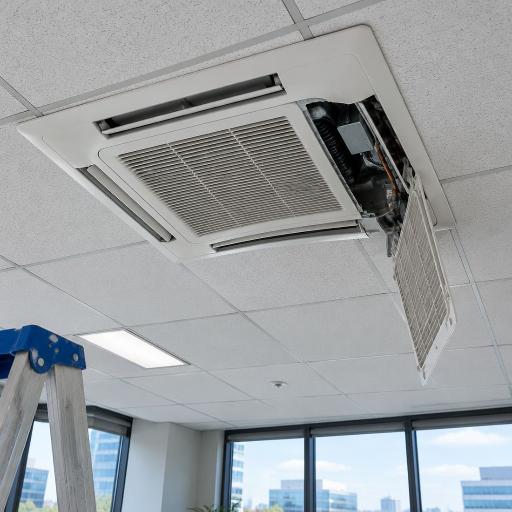

Обслуживание и мойка
кондиционеров
Комплексная мойка внутреннего и наружного блока, чистка дренажа, антибактериальная обработка, перевод на зимний режим. Для квартир и организаций.
Мойка — это не про запах, а про работу
Забитый испаритель и конденсатор перестают отдавать тепло. Кондиционер работает дольше, потребляет больше, хуже холодит и в итоге уходит в защиту. Грязь в дренаже — это лужа на стене и потолке, а не «мелочь».
Моем с разбором: снимаем корпус, промываем испаритель, крыльчатку, поддон и дренажную трубку, обрабатываем антибактериальным составом, проверяем дренаж на пролив.
- Мойка испарителя, крыльчатки, поддона и корпуса
- Промывка конденсатора наружного блока
- Чистка и пролив дренажа, проверка помпы
- Антибактериальная обработка
- Проверка давления, токов и температур после мойки

Мойка с защитным пылесборником, чтобы не залить стену
Течёт конденсат: почему и что делать
Вода на стене или с потолка — почти всегда дренаж, а не «кондиционер сломался».
Засор дренажа
В трубке скапливается слизь и пыль, вода не уходит и переливается через поддон. Продуваем и промываем трассу.
Смещён или треснул поддон
Неправильный монтаж или деформация: вода уходит мимо слива. Проверяем уровень и целостность.
Обмерзание испарителя
Лёд тает после выключения, и вода льётся через край. Причина — утечка или плохой обдув.
Помпа не откачивает
Для блоков без уклона: помпа засорилась или вышла из строя. Чистим или меняем, при необходимости монтируем новую.
Сезонный режим и консервация
Перевод на зимний и летний режим нужен не всем системам, но там, где он предусмотрен, лучше не забывать о нём до первых морозов.
Если кондиционер не используется зимой на объекте без отопления, делаем консервацию: сливаем воду, продуваем дренаж, закрываем контур от пыли и влаги. Так весной не приходится менять плату и чистить окислы.
- Перевод на зимний и летний режим
- Консервация системы на холодный сезон
- Расконсервация и проверка перед летом
- Монтаж и замена дренажной помпы

Кассетные и канальные системы в офисах и магазинах
Сервис по графику вместо авралов
Когда техника обслуживается по плану, она реже встаёт в самый жаркий месяц.
Составляем под объект: сезонная мойка, проверка перед нагрузкой, плановые осмотры.
Акт выполненных работ, счёт, безналичный расчёт. Работаем с юрлицами и ИП.
Что проверили, что почистили, что требует внимания в следующий раз.
Пора помыть кондиционер? Запишем на удобный день
Скажите, сколько блоков и какого типа, и когда удобно принять мастера. Работаем в Гомеле и по области.